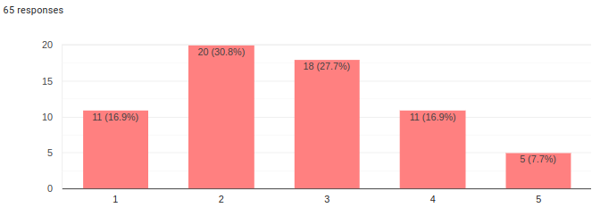

Number of respondents: 65
Analysis of Customer Survey for Meddibia
Meddibia Market Analysis
Response Demographics
Question-by-Question Breakdown
Q1: “What is your role at the hospital?”
Q2: “How does your current medical record system impact daily operations at the hospital?”
MR has positive impact on daily operations: 30.8% MR has negative impact on daily operations: 66.2%
| What type of medical record system do you currently use? | Electronic (EMR/EHR) | Hybrid (paper & electronic) | Paper-based |
|---|---|---|---|
| How does your current medical record system impact daily operations at the hospital? | |||
| Causes occasional delays and inconveniences | 8 | 10 | 16 |
| Has a neutral impact on daily operations | 2 | nan | nan |
| Moderately improves workflow and saves time | 1 | 4 | 4 |
| Severely hinders productivity and causes frequent frustration | nan | 5 | 4 |
| Significantly enhances efficiency and productivity | 7 | 3 | 1 |
EMR Type for each Impact Level
Q3: “On a scale of 1-5, how satisfied are you with your current medical record system?”

Q4: “What type of medical record system do you currently use?”
Q5: “What are the key challenges you face with the existing record-keeping process?”
Q7: “On a scale of 1-5, how often do you encounter issues with your current medical record system?”
Q8: “Have you explored or considered any alternative solutions to improve your medical record system?”
Q8a: “If yes, what solutions have you considered?”
Code
# summarize with gptQ9: “What factors are important to you when considering a new system for the hospital?”
Code
# summarize with gptQ10: “On a scale of 1-5, how critical do you consider the need for a more advanced medical record system in your hospital?”
Q10a: “Why do you feel this way?”
Code
# summarize with gpt - include Q10 answer